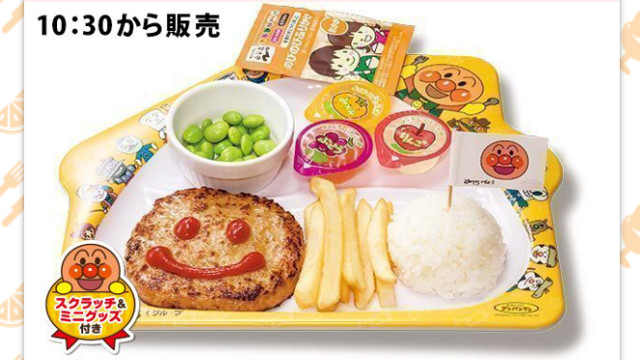
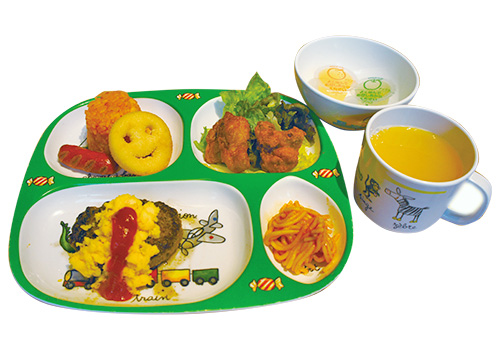
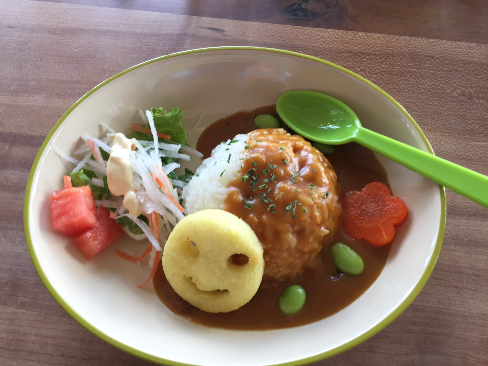
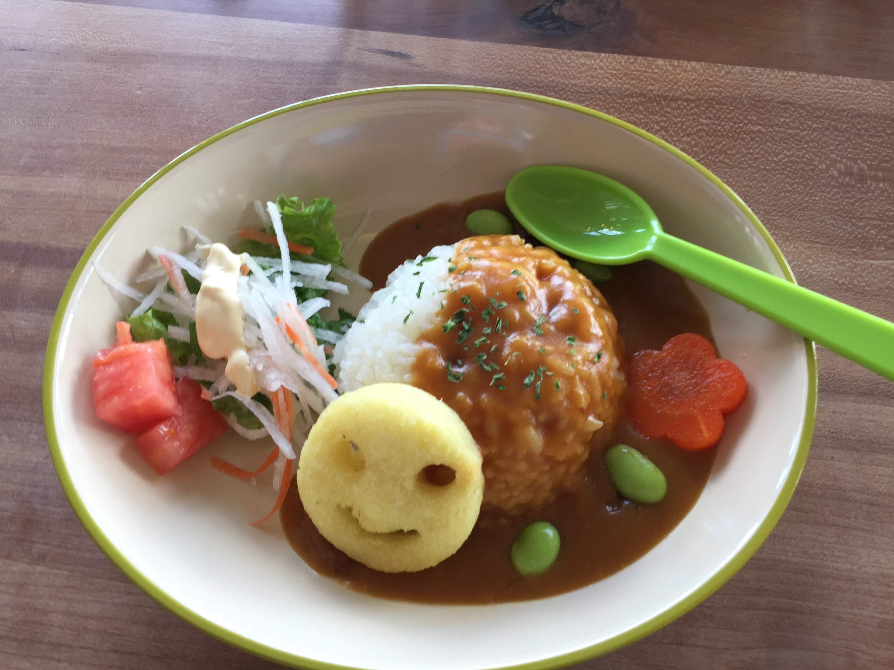
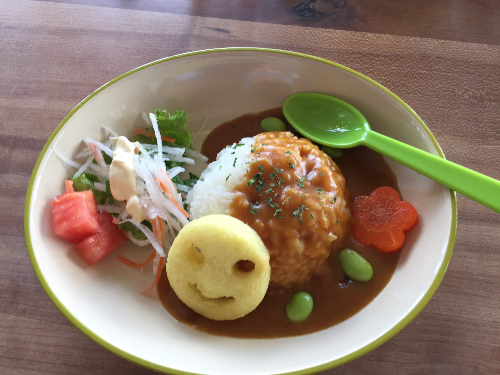
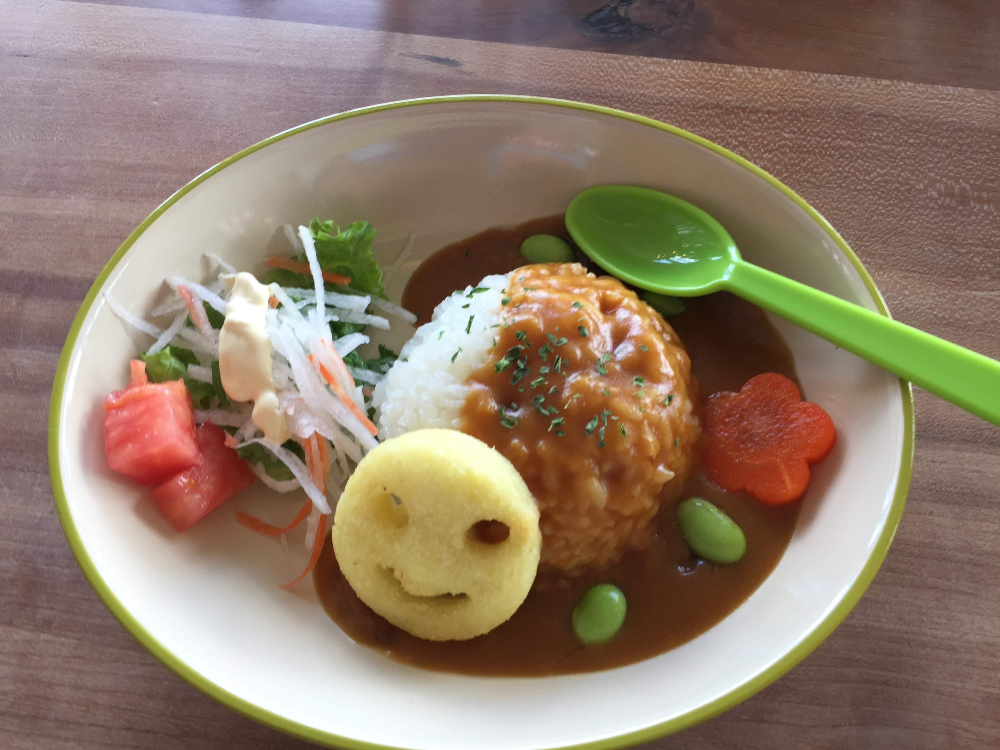
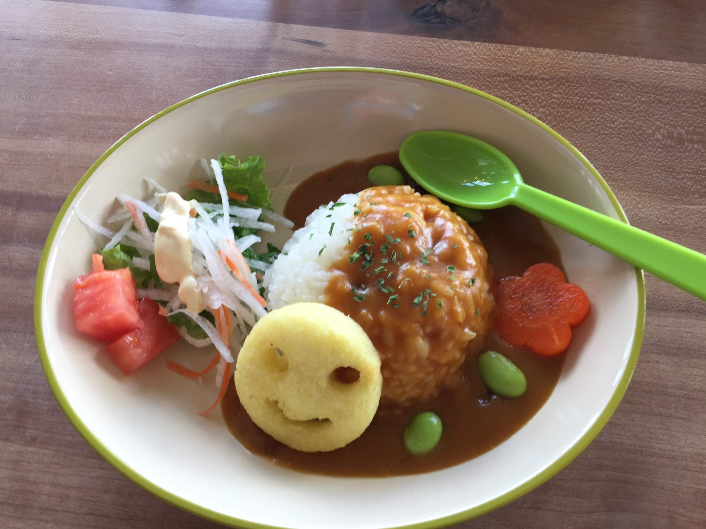
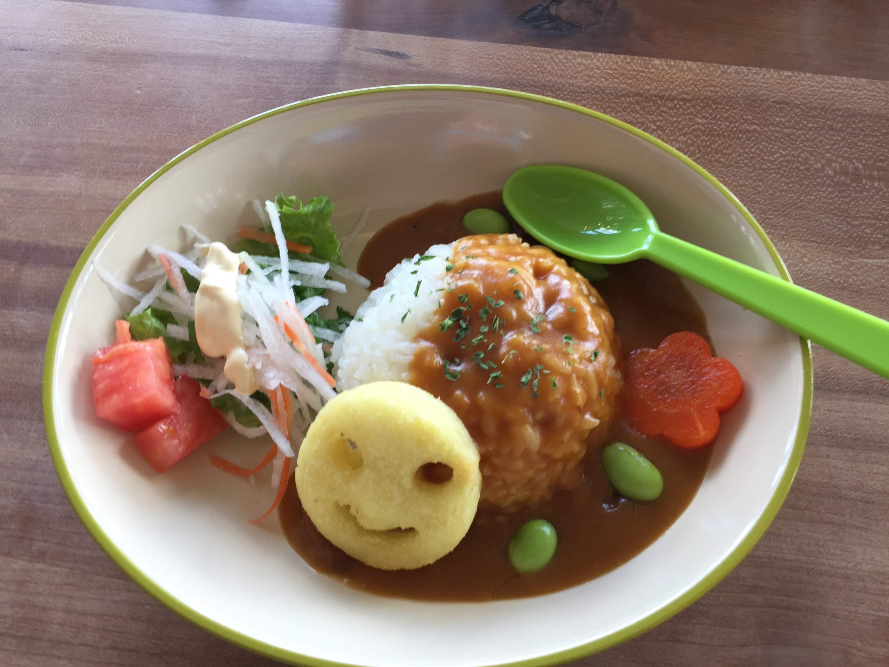
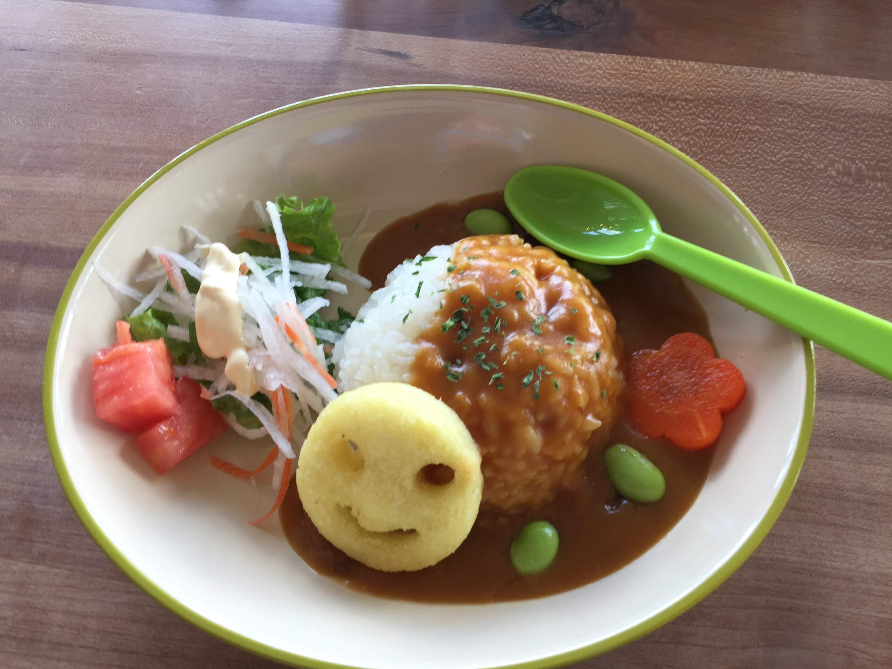

 

キッズメニューのあるレストラン検索
現在地から検索
SEARCH
駅から検索
新宿駅
代々木駅
原宿駅
渋谷駅
恵比寿駅
目黒駅
五反田駅
大崎駅
品川駅
田町駅
浜松駅
新橋駅
有楽町駅
東京駅
神田駅
秋葉原駅
御徒町駅
上野駅
鶯谷駅
日暮里駅
西日暮里駅
田端駅
駒込駅
巣鴨駅
大塚駅
池袋駅
目白駅
高田馬場駅
新大久保駅
ここに結果が表示されます
 




